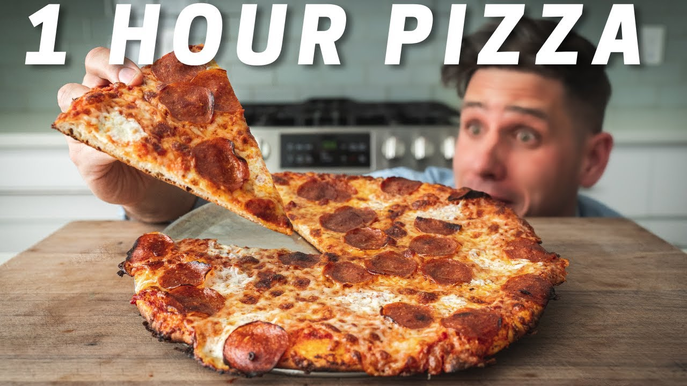

Home
60 Minute Pizza

The first recipie I followed from one of my favorite Youtubers, Brian Lagerstrom. This pizza comes together in
about 60 minutes start to finish with a little bit of practice and significantly simplifies the process of
pizza making! Instructional video can be found here
Ingredients
Dough
- 210g or just under 1 cup of beer
- 350g or 2 3/4c AP flour (11.7% protein)
- 5g or 1tsp salt
- 8g or 1 3/4tsp sugar
- 7g or 2 1/4tsp instant yeast
- 15g or 1 1/2Tbsp olive oil
Sauce
- 28oz can crushed tomatoes
- 100g or 6 tbsp tomato paste
- 12g or 2 tsp salt
- 20g or 1 2/3 tbsp sugar
- 2g or 2 3/4 tsp dried basil
- 2g or 2 tsp dried oregano
- 1g or 1/2 tsp chili flake
- 2g or 3/4 tsp garlic powder
- 2g or 3/4 tsp onion powder
Toppings
- Full fat aged mozzarella, shredded
- Fresh whole milk mozzarella, cubed or torn into 1/2" pieces
- Pepperonis, peperoncini, etc
Instructions
Dough
- Heat beer over low for 20-30 sec or until temp reaches about 98F/36C.
- Into the bowl of a food processor measure flour, salt, sugar, yeast, olive oil.
- Spin on high for 20-30 sec until just combined.
- Stream in warmed beer and continue to spin until dough forms into a shaggy ball.
- Flip dough onto a floured surface and knead for about a minute.
- Divide dough into 2 equal sized pieces (about 300g each).
- Form into round balls, cover with damp towel and allow to rest at room temp for 15min.
- Place each ball onto an oiled piece of parchment and top with another piece of oiled parchment.
- Flatten dough slightly with your hands then proceed to roll dough out into a 12-14" round.
- Once rolled out, allow dough rounds to rise at room temp for 30 to 40 minutes while you prepare the sauce and toppings and your oven preheats
(Preheat oven and pizza stone or steel to 550F/287C).
Sauce
- Into a high sided container add crushed tomatoes, tomato paste, salt, sugar, basil, oregano, chili flake, garlic powder, and onion powder.
- Spin with immersion blender to break down to smooth, but still has texture.
Building Pizza
- Spoon about 3-4tbsp of sauce across dough
- Evenly spread shredded mozz, followed by fresh mozz.
- Add additional toppings of choice (pepperoni, pepperoncini, and parm is a fav combo of mine).
- Bake for 6-7min.